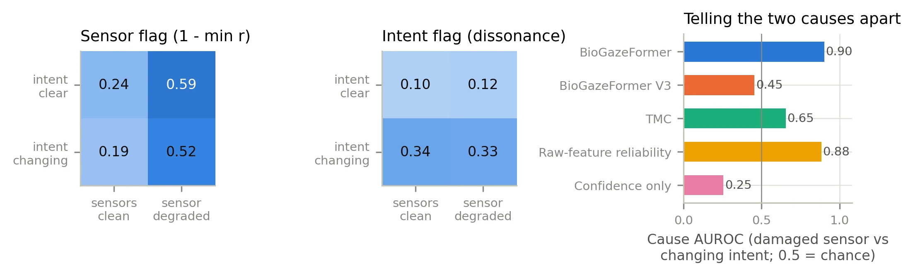
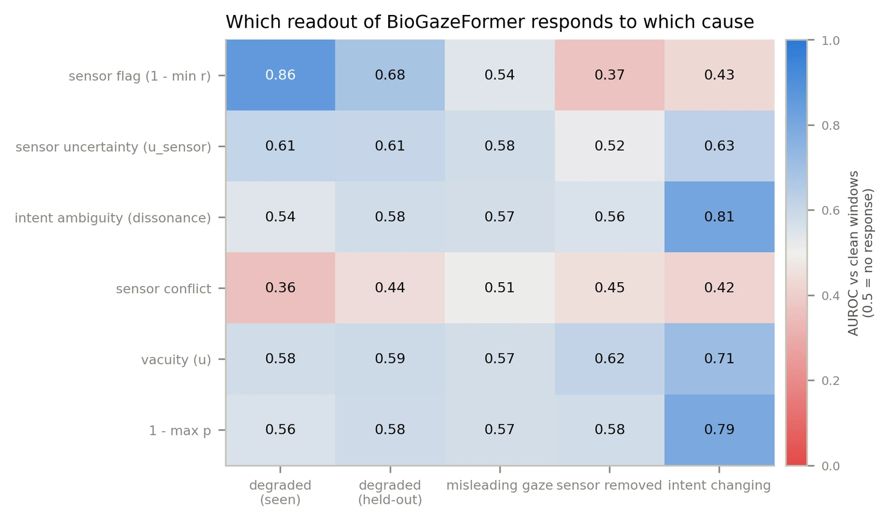

Sensor fault or unclear intent?
When an intent decoder is unsure, a robot needs to know why. BioGazeFormer fuses EEG, EMG and eye tracking and reports, in every 2-second window, the intended task, how far it trusts each sensor, and whether the remaining uncertainty comes from the sensors or from the person.
The offline study is complete and the manuscript is being written for Information Fusion. Next is a live streaming study: new participants, tasks cued in random order, deliberate changes of intent crossed with induced sensor faults, and a Kinova Gen3 arm that acts, waits for the person, or asks for a sensor check. The real-time decoder is built and tested on recorded sessions.
The question
Our earlier work asked when inferred intent is sufficient for a robot to act (NeuroCommitSSM, IROS 2026). This study asks the reverse: when inferred intent is not sufficient, what is missing?
There are two answers, and they call for opposite behavior. A sensor may be failing: an EMG electrode loses contact, the EEG cap shifts, the eye tracker loses the pupils. The person may have decided long ago, and the robot should stop trusting that sensor and ask for it to be checked. Or the person has not decided yet: the signals are faithful, the intent is not, and the robot should wait. A decoder that reports only its confidence cannot tell these apart. In our data, confidence barely reacts to sensor damage (AUROC 0.56 against clean windows) but does react to changing intent (0.79).
The idea: reliability with a defined meaning
Fusion models that weight sensors with learned gates or attention give those weights no defined meaning: a sensor can be down-weighted because it is damaged, because it carries little information about the current class, or because the intent is ambiguous. We define the reliability of a sensor in a window as the share of its evidence that survives the damage in that window: 1 for a clean sensor, whatever the person intends, and 0 for a destroyed one. That quantity can be supervised.
Damage clean signals on purpose
A library of sensor faults, each with a known integrity target: noise, weak signals, lost and stuck channels, EMG electrodes off the skin, and eye-tracker dropout patterns taken from real recordings.
Learn reliability from the damage alone
A small network predicts each sensor's reliability from its own signal. A stop-gradient keeps the classification loss from changing it, so it cannot learn to express intent.
Discount, then fuse
Each sensor's evidence is multiplied by its reliability before evidential fusion, the discounting rule of belief-function theory.
Train on changing intent
Windows in which a person moves from rest into a task get mixture targets, so changing intent shows up as evidence split between two intents (the intent flag) and not as a failing sensor.
Testing it: a crossed design
To check whether a decoder knows why it is unsure, the cause in every test window has to be known. From a synchronized EEG–EMG–eye-tracking corpus we crossed windows with clean or damaged sensors with windows in which intent is clear or changing: 25,787 clear-intent windows, 12,222 windows that span the switch from rest into a task, 60 sensor conditions (15 of them kept out of training), and 12,100 windows of real eye-tracker loss. Every fusion baseline was trained with the same damage library, and eleven success criteria were fixed before any test result was seen. Twenty-two participants were evaluated in leave-one-subject-out cross-validation; eight more, three of them recorded after the model was frozen, were kept out of development entirely.

Results
The reliabilities of the healthy sensors stayed put when another sensor failed, and during real eye-tracker loss the eye-tracking reliability followed the share of valid samples in all 22 participants. Under realistic damage the model reached 80.4% balanced accuracy, above five of the seven fusion baselines. When the least confident quarter of the windows is deferred, the sensor flag assigns the right cause to 85% of them, against 55% with confidence alone. On the eight unseen participants it classified 85.8% of the windows correctly, level with the best comparison model (85.6%).

What made it work
The ablations locate the effect. Learning reliability through the classification loss instead of the integrity target dropped the cause AUROC to 0.58; training without the realistic damage dropped it to 0.70; training without transition windows weakened the intent flag from 0.81 to 0.63. Replacing the reliability discount with plain sensor availability changed nothing. The meaning of a discount comes from what supervises it, not from the operator that applies it.
A simple baseline came close. A logistic regression on five signal-quality features per sensor, trained on the same damage, separated the causes with an AUROC of 0.88. Much of the separation therefore comes from supervising trust with known damage at all. The learned reliability detects realistic damage far better (AUROC 0.94 against 0.75), because weak and stuck channels move the quality features in the opposite direction from noise.
What did not work
- Damage types absent from training were poorly recognized (mean detection AUROC 0.62); spikes and desynchronized streams went unnoticed. Recorded failures from the live sessions will be added to the damage library.
- Gaze did not reveal the task before the cue. The little information present came from head motion and is explained by the blocked order of the recordings, so the live study cues the tasks in random order.
- EMG reliability is lower when the arm rests (0.67), because a quiet muscle looks like a weak electrode. The live system therefore flags a sensor only below a reliability of 0.20.
- Accumulating evidence over windows slowed decisions (1.19 s against 1.02 s to a stable correct decision).
Next: live streaming with a robot
The decoder already runs live. It streams EEG and EMG from iMotions and gaze and head motion from the Pupil Labs Neon real-time interface, applies the same preprocessing to a sliding buffer, and shows the task belief, the three reliabilities and a message (clear, intent unclear, or check sensor) on a dashboard. Replaying a recorded pilot session, it flagged an EEG headset that had lost electrode contact. The study will compare a cause-aware robot policy with a confidence-only policy on a Kinova Gen3, with sensor faults and changes of intent introduced on purpose so that the true cause of every moment is known.